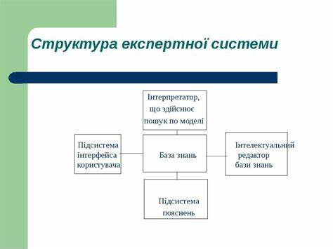

Зміст
Що таке цей бот?
Цей бот дозволяє вам відповідати на питання, отримувати характеристики, та аналізувати ваші відповіді. Ви можете також редагувати питання та переглядати свої відповіді.
Кнопки меню
-
Характеристика ідеального партнера:
Отримайте опис ідеального партнера на основі ваших відповідей. Після завершення опитування, бот проаналізує ваші відповіді та надасть детальний звіт про ваші уподобання та бажання в партнері.
Як це працює: Просто натисніть на цю кнопку, і бот надішле вам повідомлення з характеристиками.
-
Що ваші відповіді говорять про вас:
Дізнайтеся, що ваші відповіді відображають про вашу особистість. Бот зможе проаналізувати ваші вибори та визначити ваші риси характеру.
Як це працює: Натисніть кнопку, і ви отримаєте короткий опис вашої особистості на основі відповідей.
-
Переглянути всі відповіді:
Перегляньте всі ваші відповіді на питання. Це дозволить вам зрозуміти, які питання ви вже відповідали, і які можуть бути вашими сильними та слабкими сторонами.
Як це працює: Виберіть цю опцію, і бот надішле вам список ваших відповідей.
-
Довідка:
Дізнайтеся, як користуватися ботом і отримати додаткову інформацію. Ця кнопка відкриває інформацію про всі функції бота та їх призначення.
Як це працює: Просто натисніть на кнопку, щоб отримати інструкції та рекомендації.
-
Редагувати питання:
Змініть питання, які задає бот. Ця функція дозволяє вам налаштувати опитування під ваші потреби або видалити неприйнятні питання.
Як це працює: Натиснувши на цю кнопку, ви зможете ввести нові питання або відредагувати існуючі.
-
Видалити питання:
Видаліть питання з бази даних. Це дозволить очистити опитування від питань, які більше не є актуальними.
Як це працює: Виберіть цю опцію та введіть питання, яке потрібно видалити.
-
Додати питання:
Додайте нове питання до опитування. Це дає можливість вам самостійно розширювати базу питань бота.
Як це працює: Натисніть на кнопку, щоб ввести нове питання, яке ви хочете додати.
-
Почати спочатку:
Перезапустіть опитування. Це дасть вам можливість почати все з початку та відповісти на питання заново.
Як це працює: Натисніть на цю кнопку, щоб почати нове опитування без збереження попередніх відповідей.
Експертна система
Експертна система — це комп'ютерна система, що імітує здатність ухвалювати рішення людських експертів. Вона використовує знання та правила для аналізу та вирішення складних задач.
| Компонент | Опис |
|---|---|
| База знань | Містить факти та правила, що використовуються системою. |
| Машина висновків | Аналізує факти та правила для прийняття рішень. |
| Інтерфейс користувача | Забезпечує взаємодію між користувачем та системою. |
Мультимедіа
Ось декілька відео та зображень:
Для отримання додаткової інформації, будь ласка, натисніть тут.